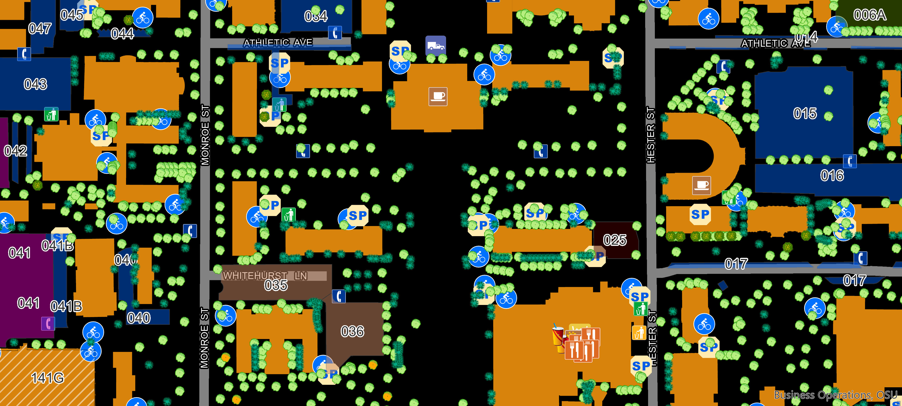
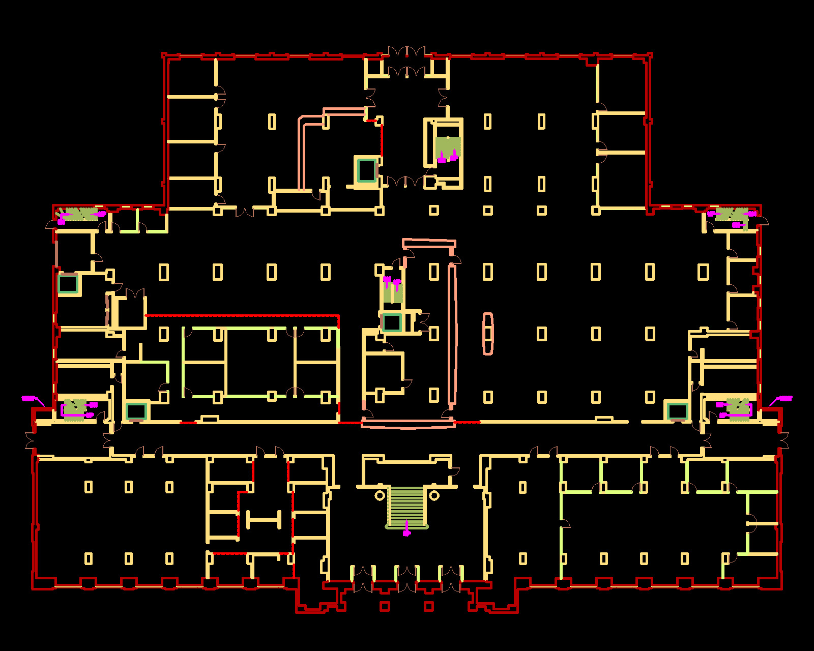
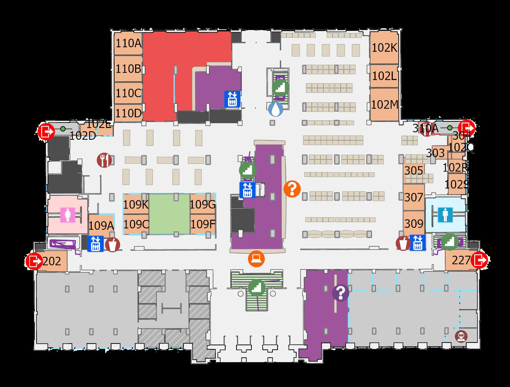
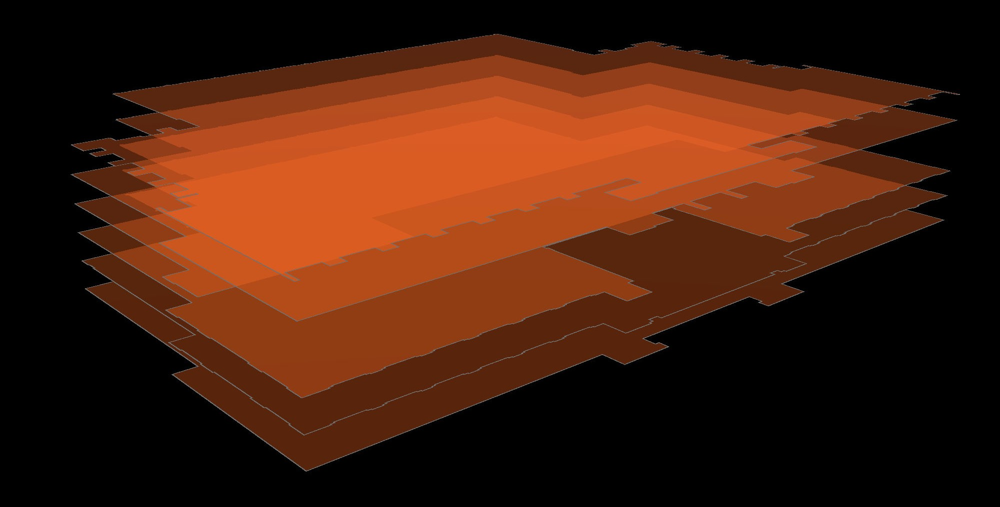
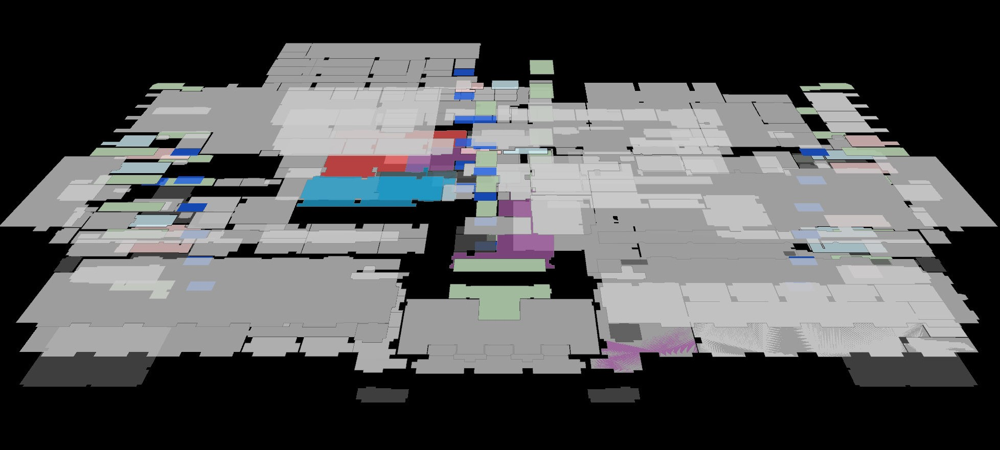
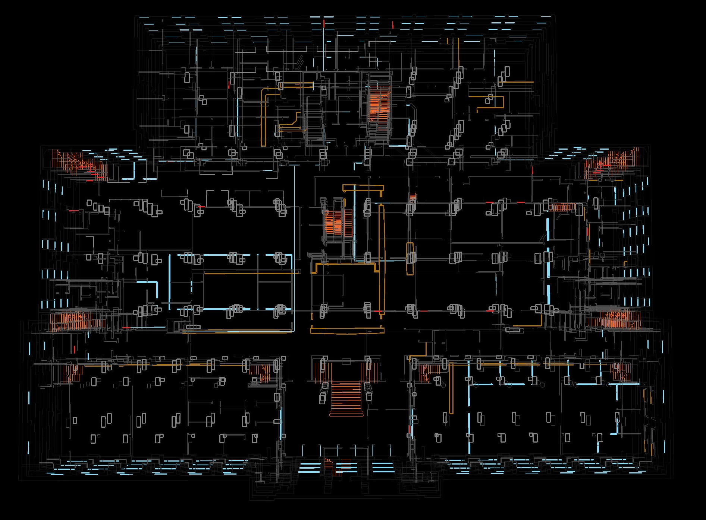
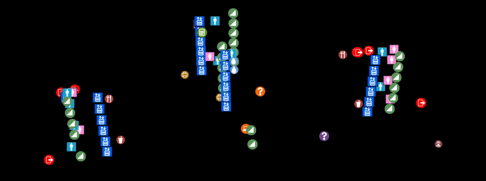

Kevin Dyke, Oklahoma State University Library
GIS moves inside



An Indoor GIS definition
The ArcGIS Indoors Information Model represents facilities as floors, units, details, and points of interest.
An Indoor GIS definition
The ArcGIS Indoors Information Model represents facilities as floors, units, details, and points of interest.
Help people search for spaces, resources, and destinations.
An Indoor GIS definition
The ArcGIS Indoors Information Model represents facilities as floors, units, details, and points of interest.
Identify which features and places are common destinations.
Aid users in moving across and between floors with accessible paths.
Translating CAD elements into GIS layers

Translating CAD elements into GIS layers

Translating CAD elements into GIS layers

Translating CAD elements into GIS layers

Handling a dozen different floorplans
import os
import arcpy
arcpy.env.workspace = r"C:\ArcGIS_Projects\IndoorMap\Indoors.gdb"
cad_path = r"C:\ArcGIS_Projects\IndoorMap\library_cad_update_Jan2025"
input_cads = [
[[os.path.join(cad_path, '0040-1P.dwg'),
os.path.join(cad_path, '0040-1b.dwg')],'First', 0, "0 Meters",
"A-WALL-EXTR;A-WALL-INTR;A-CASE;A-STRS;A-GLAZ"],
[[os.path.join(cad_path,'0040-2P.dwg'),
os.path.join(cad_path, '0040-2b.dwg')],'Second', 1, "2.6 Meters",
"A-WALL-EXTR;A-WALL-INTR;A-CASE;A-STRS;A-GLAZ;A-WALL-PANL"],
[[os.path.join(cad_path,'0040-3P.dwg'),
os.path.join(cad_path, '0040-3b.dwg')],'Third', 2, "5.2 Meters",
"A-WALL-EXTR;A-WALL-INTR;A-CASE;A-STRS;A-GLAZ;A-WALL-PANL"],
[[os.path.join(cad_path,'0040-4P.dwg'),
os.path.join(cad_path, '0040-4b.dwg')],'Fourth', 3, "7.8 Meters",
"A-WALL-EXTR;A-WALL-INTR;A-STRS;A-GLAZ"],
[[os.path.join(cad_path,'0040-5P.dwg'),
os.path.join(cad_path, '0040-5b.dwg')],'Fifth', 4, "10.4 Meters",
"A-WALL-EXTR;A-WALL-INTR;A-CASE;A-STRS;A-GLAZ"],
[[os.path.join(cad_path,'0040-BP.dwg'),
os.path.join(cad_path, '0040-bb.dwg')],'Lower Level', -1, "-2.6 Meters",
"A-WALL-EXTR;A-WALL-INTR;A-STRS;A-GLAZ;A-NEW"],
[[os.path.join(cad_path,'0040-SBP.dwg'),
os.path.join(cad_path, '0040-sbb.dwg')],'Sub-basement', -2, "-5.2 Meters",
"A-WALL-EXTR;A-WALL-INTR;A-STRS;A-GLAZ"]
]
for cad in input_cads:
filename = cad[0]
level_name = cad[1]
vert_order = cad[2]
level_elev = cad[3]
layers = cad[4]
arcpy.indoors.ImportCADToIndoorDataset(
input_cad_datasets=filename, target_level_features="Levels",
level_name=level_name, vertical_order=vert_order,
level_elevation=level_elev, target_facility_features="Facilities",
facility_name="osu_lib", target_unit_features="Units",
target_detail_features="Details",
allow_layers_from_cad="ALLOW_LAYERS_FROM_CAD",
input_unit_layers_cad="RM$", input_unit_feature_layers=None,
input_level_layers_cad="GROS$", input_level_feature_layers=None,
input_door_layers_cad="A-DOOR", input_door_feature_layers=None,
input_detail_layers_cad=layers, input_detail_feature_layers=None,
input_facility_layers_cad=None, input_facility_feature_layers=None,
cad_annotation_mapping="Units NAME Text RM$TXT # # #",
door_close_buffer="0.3 InchesInt", input_unit_minimum_width="3 FeetInt",
input_unit_minimum_area="9 SquareFeet", floor_plan_config_file=None,
input_gap_tolerance="3.175 Millimeters"
)
From CAD to GIS
The user experience
The map becomes a service: wayfinding, space discovery, and operational context in one place.
Getting place specific
Which floor has a quiet study space?
Where can I borrow a phone charger?
How do I get there without stairs?
Which spaces are available for collaboration?
Implementation principles
ArcGIS IPS changes
Looking (further) ahead
Indoor mapping of multiple campus facilities, all navigable alongside one another and existing GIS assets.
OSU LIBRARY / MAPS / GIS